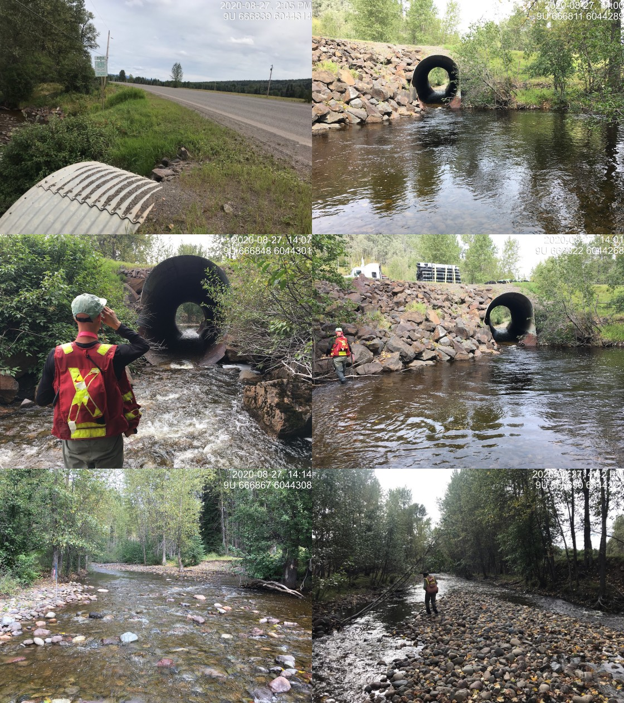

Appendix - 197658 - Byman Creek
Site Location
PSCIS crossing 197658 is located on Byman Creek on Highway 16 approximately 20km east of Houston, BC with the crossing located approximately 2.5km upstream from the confluence with the Bulkley River. Highway 16 is the responsibility of the B.C. Ministry of Transportation and Infrastructure.
Background
At crossing 197658, Byman Creek is a fifth order stream with a watershed area upstream of the crossing of approximately 89.9km2. The elevation of the watershed ranges from a maximum of 1240 to 680m at PSCIS crossing 197658. Upstream of the highway, coho, steelhead, rainbow trout, longnose dace, redside shiner, longnose sucker and largescale sucker have been previously recorded as present (MoE 2020a). Chinook, coho and steelhead have been noted as spawning in Byman Creek with chinook documented as present up to the highway culvert only (Allen Gottesfeld, Rabnett, and Hall 2002; DFO 1991). A bridge (PSCIS 197660) is located on the stream under the railway approximately 1.3km downstream. Although there are numerous crossings modelled upstream, a series of three impassable waterfalls are located approximately 6km upstream of the highway (pers. comm. Jonathan Van Barneveld, Forester - FLNR). There are only two modelled crossings (1800233, 1801084) located on a small tributary entering the mainstem below the falls.
In the summer of 1998, the Nadina Community Futures Development Corporation (NCFDC) contracted the British Columbia Conservation Foundation to carry out a detailed Level 1 Fish, Fish Habitat and Riparian Assessment in the first reach of Byman Creek as well as several other large Upper Bulkley River tributary streams and the Upper Bulkley mainstem. The area surveyed extended to 4.2km from the mouth, covering 2.5km of habitat upstream of the culvert (NCFDC 1998). Building on these assessments and detailed fish sampling, NCFDC (1998) developed restoration prescriptions for the lower reaches of the Byman Creek. Prescriptions were developed to address what the authors termed moderately to severely disturbed habitat, which comprised 90% of the area surveyed. Impacts due to land use in the watershed included:
- straightening/diversion of main channel below Highway 16.
- loss of riparian forest and soil compaction in areas used for agriculture, the powerline corridor, transportation corridors and at housing developments within the floodplain.
- loss of the shrub/herb layer and soil compaction from cattle grazing where overstory still present.
- removal of large woody debris which controls lateral channel movement and plant community distribution on the floodplain.
- high water temperatures, poor LWD frequency, extensive channel and slope disturbance and high sediment load, substrate embededdness and low pool frequency/quality.
Overall, NCFDC (1998) report that, in an unimpacted state, the first reach of Byman Creek (including the 2.5km upstream of the culvert) is a critical and productive area for spawning and rearing particularly for coho and steelhead. They also note that the area may be an important area for chinook salmon summer rearing and summer/fall spawning habitat as it contains larger substrate, greater foraging opportunities, greater channel complexity and cooler temperatures than present in the adjacent Bulkley mainstem. The proximity of the reach to the mainstem provides easy access to overwintering habitat, mainstem rearing areas for older juvenile salmonids and options for refuge during high flow events. Detailed prescriptions for restorative measures that address noted impacts are documented in NCFDC (1998).
Overwintering studies using minnowtrapping were conducted downstream of the highway culvert between 2005 and 2009 with coho and rainbow trout/steelhead captured. Results are summarized in Donas and Newman (2006), Donas and Newman (2007), Donas and Newman (2008) and Donas and Newman (2010). During these assessments, fry were observed actively migrating up through the culvert (pers comm Cindy Verbeek, Upper Bulkley Streamkeepers).
PSCIS stream crossing 197658 was ranked as a high priority for follow up by Smith (2018) and was assessed as a barrier to upstream migration during low flows (low water depth) by McCarthy and Fernando (2015). In 2007, Wilson and Rabnett (2007) assessed the site reported that fish passage at 197658 was not hindered by the culverts at that time although they were not using the assessment protocol standardized by the Fish Passage Technical Working Group (MoE 2011). A map of the watershed is provided in map attachment 093L.114.
Stream Characteristics at Crossing
At the time of the survey, the culvert under Highway 16 was un-embedded, non-backwatered and ranked as a barrier to upstream fish passage acoording to the provincial protocol (MoE 2011). The pipe was 4m in diameter with a length of 24m, a culvert slope of 4%, a stream width ratio of 2.8 and an outlet drop of 2m (Table 5.46). Water temperature was 12\(^\circ\)C, pH was 7.9 and conductivity was 103uS/cm.
Stream Characteristics Downstream
The stream was surveyed downstream from the culvert for 300m beginning at the culvert location and then for another 330m beginning downstream of the railway bridge and teminating at the Bulkley River mainstem (Figures 5.49 - 5.50).
In the area immediately below the culvert, total cover amount was rated as trace with large woody debris dominant. Cover was also present as small woody debris (Table 5.47). The average channel width was 11.2m, the average wetted width was 9.8m and the average gradient was 1.2%. The dominant substrate was cobbles with gravels subdominant. Within the area surveyed, the channel flowed through cattle rangeland and appeared to be straightened with low complexity. Cattle impacts were evident on both banks with extensive grazing of riparian vegetation apparent. There was minimal cover available with no pools, and extensive riffles. The habitat was rated as moderate value as it was considered an important migration corridor and because the larger substrate could provide important salmon fry rearing habitat, particularly in low velocities margins.
Below the railway bridge, the habitat was noted as far more complex than the area immediately below the highway culvert. Total cover amount was rated as abundant with overhanging vegetation dominant. Cover was also present as small woody debris, large woody debris, undercut banks, and deep pools. The average channel width was 8.6m, the average wetted width was 7.5m and the average gradient was 0.8%. The dominant substrate was cobbles with gravels subdominant. There were extensive sections of channel with deep glides (50-70 cm deep at the time of survey) with well developed riparian vegetation creating good structure for all species and life stages of salmonids. An algae layer was noted on the substrate. There were abundant large gravels and small cobbles present suitable for salmon spawning.
Stream Characteristics Upstream
The stream was surveyed upstream from 197658 for 1400m (Figures 5.51 - 5.52). Within the area surveyed, total cover amount was rated as moderate with deep pools dominant. Cover was also present as small woody debris, large woody debris, boulders, undercut banks, and overhanging vegetation (Table 5.47). The average channel width was 12.9m, the average wetted width was 7.9m and the average gradient was 2.1%. The dominant substrate was cobbles with boulders subdominant. Within the area surveyed, riparian areas adjacent to both banks were used as rangeland with several cattle access points on the stream and evidence of understory shrub degradation from cattle grazing. The large stream had high habitat complexity including numerous pools up to 2m deep and frequent glide sections to 1m deep throughout. There were extensive areas of gravel suitable for spawning for resident and anadromous salmonid species. Habitat value was rated as high for resident and anadromous salmonid rearing and spawning.
Table 5.48 presents preliminary fish passage modelling data for crossing 197658 with spawning and rearing habitat estimated for chinook, coho, sockeye and steelhead. Modelled estimates of the total length of salmon or steelhead habitat upstream of the crossing before potential barriers are 5km of potential spawning habitat and 5.3km of potential rearing habitat.
Fish Sampling
Minnowtrapping was conducted with three traps set overnight upstream as well as downstream of the crossing. A total of 5 coho and 6 rainbow trout were captured downstream with 1 coho and 9 rainbow trout captured upstream (Table 5.49 and (Figures 5.53 - 5.54).
Structure Remediation and Cost Estimate
Structure replacement with a bridge (15.1m span) is recommended to provide access to the habitat located upstream of PSCIS crossing 197658. The cost of the work is estimated at $7,550,000 for a cost benefit of 0.8 linear m/$1000 and 10.3m2/$1000.
Conclusion
There is an estimated 6km of mainstem habitat upstream of crossing 197658. Habitat in this area was rated as high value for salmonid rearing/spawning. The crossing may present a barrier not only to potentially all life stages of salmonids at higher flow velocities, but also to adult fish (including chinook and coho spawners) due to shallow water depths in the culvert during low flows. Restoration of riparian forests, cattle exclusion, bank stabilization and habitat complexing could be considered alongside fish passage restoration activities (NCFDC 1998). Highway 16 is the responsibility of the Ministry of Transportation and Infrastructure. The crossing was ranked as a high priority for proceeding to design for replacement.
| Location and Stream Data |
|
Crossing Characteristics | – |
|---|---|---|---|
| Date | 2020-08-27 | Crossing Sub Type | Oval Culvert |
| PSCIS ID | 197658 | Diameter (m) | 4 |
| External ID | – | Length (m) | 24 |
| Crew | AI, KP | Embedded | No |
| UTM Zone | 9 | Depth Embedded (m) | – |
| Easting | 666847.2 | Resemble Channel | No |
| Northing | 6044305 | Backwatered | No |
| Stream | Byman Creek | Percent Backwatered | – |
| Road | Highway 16 | Fill Depth (m) | 1.6 |
| Road Tenure | MoTi highway | Outlet Drop (m) | 2 |
| Channel Width (m) | 11.1 | Outlet Pool Depth (m) | 3.8 |
| Stream Slope (%) | 1.2 | Inlet Drop | Yes |
| Beaver Activity | No | Slope (%) | 4 |
| Habitat Value | High | Valley Fill | Deep Fill |
| Final score | 39 | Barrier Result | Barrier |
| Fix type | Replace with New Open Bottom Structure | Fix Span / Diameter | 15.1 |
| Photos: From top left clockwise: Road/Site Card, Barrel, Outlet, Downstream, Upstream, Inlet. | |||
| Comments: Culvert is likely as passable for most species and life stages at most non-peak and non-lowest flows. Streamkeepers have observed fry moving through culvert in overwintering studies. |
| Site | Location | Length Surveyed (m) | Channel Width (m) | Wetted Width (m) | Pool Depth (m) | Gradient (%) | Total Cover | Habitat Value |
|---|---|---|---|---|---|---|---|---|
| 197658 | Upstream | 1400 | 12.9 | 7.9 | 0.6 | 2.1 | moderate | high |
| 197658 | Downstream | 330 | 8.6 | 7.5 | 0.9 | 0.8 | abundant | high |
| 197658 | Downstream | 300 | 11.2 | 9.8 | – | 1.2 | trace | moderate |
| Habitat | Potential | Remediation Gain | Remediation Gain (%) |
|---|---|---|---|
| Salmon Network (km) | 5.5 | 5.5 | 100 |
| Salmon Lake Reservoir (ha) | – | 0.0 | – |
| Salmon Wetland (ha) | – | 0.0 | – |
| Steelhead Network (km) | 11.4 | 7.3 | 64 |
| Steelhead Lake Reservoir (ha) | 7.0 | 0.0 | 0 |
| Steelhead Wetland (ha) | 7.9 | 0.0 | 0 |
| CH Spawning (km) | 5.0 | 5.0 | 100 |
| CH Rearing (km) | 5.0 | 5.0 | 100 |
| CO Spawning (km) | 5.0 | 5.0 | 100 |
| CO Rearing (km) | 5.0 | 5.0 | 100 |
| CO Rearing (ha) | – | – | – |
| SK Spawning (km) | 0.0 | 0.0 | – |
| SK Rearing (km) | 0.0 | 0.0 | – |
| SK Rearing (ha) | – | – | – |
| ST Spawning (km) | 5.0 | 5.0 | 100 |
| ST Rearing (km) | 5.3 | 5.3 | 100 |
| All Spawning (km) | 5.0 | 5.0 | 100 |
| All Rearing (km) | 5.3 | 5.3 | 100 |
| All Spawning and Rearing (km) | 5.3 | 5.3 | 100 |
| * Model data is preliminary and subject to adjustments. |
| Location | Species | fry | parr | juvenile |
|---|---|---|---|---|
| Downstream | CO | 5 | 0 | 0 |
| Upstream | CO | 1 | 0 | 0 |
| Downstream | RB | 2 | 4 | 0 |
| Upstream | RB | 1 | 5 | 3 |
Figure 5.49: Typical habitat immediately downstream of PSCIS crossing 197658.
Figure 5.50: Typical habitat downstream of crossing 197658 below the railway bridge and adjacent to the Bulkley River mainstem.
Figure 5.51: habitat upstream of PSCIS crossing 197658.
Figure 5.52: Habitat upstream of PSCIS crossing 197658.

Figure 5.53: Coho captured downstream of PSCIS crossing 197658.
Figure 5.54: Coho captured upstream of PSCIS crossing 197658.